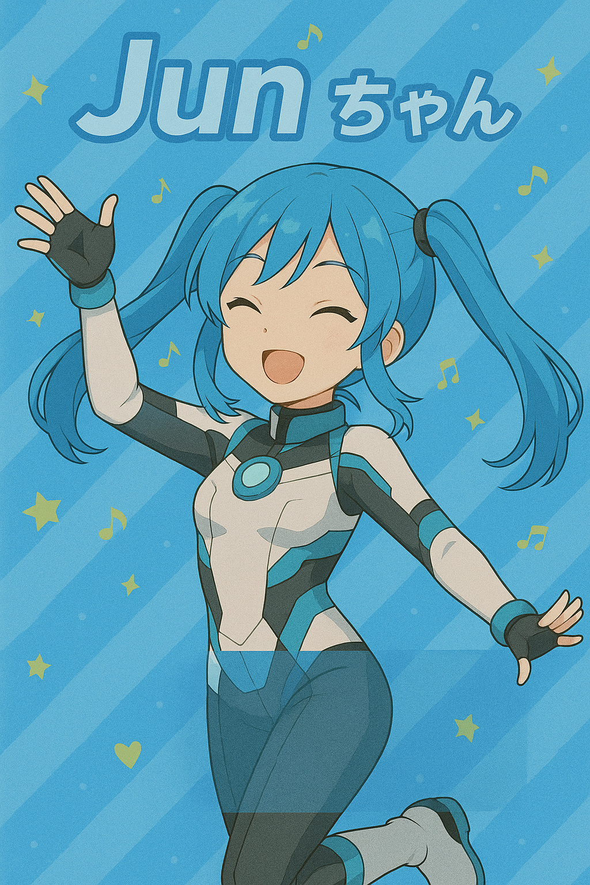

📝 クラシック

Clear
自分だけ消去
渡す
--秒
色
太さ
🔧 Dev Tool
開発者ツール
キャンバスサイズ調整:
1.4x
アニメーション開始待機時間（秒）:
0.1秒
回転後待機時間（秒）:
1.0秒
🎵 音楽ボリューム（背景5）:
50%
🖨️ 印刷遅延時間（秒）:
5.0秒
背景5動画パターン:
パターン1(回転)
パターン2(フェード)
設定を受信側に送信
背景選択:
背景1
背景2
背景3
背景4
背景5(dev)
白
🎬 動画背景
テスト演出:
🎆 花火テスト
🎊 紙吹雪テスト
ビデオサイズ:
100%
90%
80%
📹 ビデオ再生
エフェクト:
星
妖精の粉
💖 ハート
🎵 ペン音
送信後演出:
🎆 花火
🎊 紙吹雪
🔍 背景デバッグ
用紙サイズ:
A4
L判
ポストカード
印刷モード:
描画モード
フルモード
SwitchBot:
🤖 バブル
🤖 Botテスト
座標テスト:
テスト右下